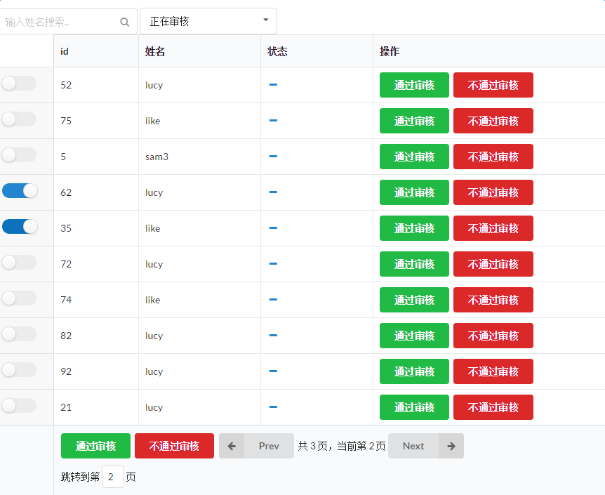
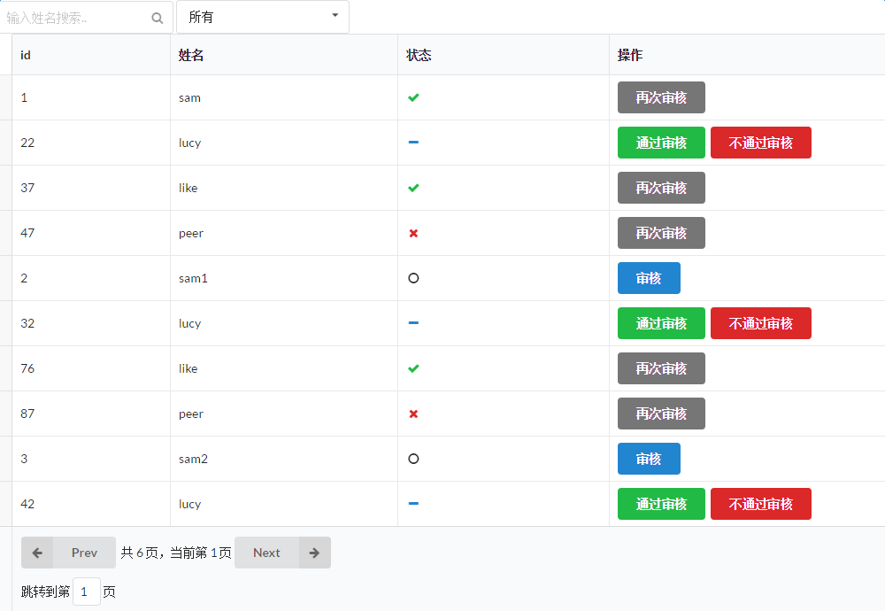
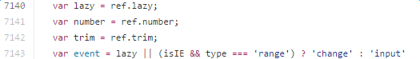
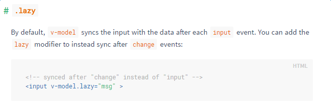

本文仅讲解如何使用 Vue 创建一个实现分页、搜索、批量操作的列表组件，所以只提供此小组件的代码及说明，不提供其之外的代码或配置
使用到的技术或框架
- Vue.js (2.0) 一套基于 MVVM 的 progressive framework，可以帮助我们迅速搭建用户界面
- semantic UI 一套漂亮的 UI 框架
- localStorage HTML5 的本地存储 API 之一（另一个为 sessionStorage），顾名思义， localStorage 保存在当前设备内存中，除非主动删除，否则一直存在
准备工作
- 安装 Vue 2.0 (rc.6)
- 引入 semantic.js 文件
- 创建 Audit.vue 文件
具体过程
一个简单的 Vue 组件由三部分组成：html 模板 、javascript 脚本 以及 css 样式。下面我们一一来看。
效果图如下：


用到的数据结构是一个简单的 user 对象数组，对象格式为
1 2 3 4 5
| user { id: int name: String, audit: int }
|
其中 audit 用来标记是否审核成功，共 4 个状态从 0 到 3，分别为 未审核、正在审核、已审核、审核不通过。
html 模板
由一对<template></template>标签作为唯一父标签包裹住模板内容，模板内分为 filter （过滤）、container （主体）两部分。
container
container 主体是一个 table 表格，表格内容 tbody 部分使用 Vue 的 v-for 指令，基于 users 数组渲染出列表。主要代码如下
1 2 3 4 5 6 7 8 9 10 11 12 13 14 15 16 17 18 19 20 21
| <tr v-for="user in filteredUsers"> <td class="collapsing"> <div class="ui toggle slider checkbox" v-if="aKey!==''"> <input type="checkbox" :value="user" v-model="selectedUsers"> <label></label> </div> </td> <td>{{ user.id }}</td> <td>{{ user.name }}</td> <td> <i class="radio black icon" v-if="user.audit==0"></i> <i class="minus blue icon" v-if="user.audit==1"></i> <i class="checkmark green icon" v-if="user.audit==2"></i> <i class="remove red icon" v-if="user.audit==3"></i> </td> <td> <ui-button css="primary" v-if="user.audit==0" @click="user.audit=1">审核</ui-button> <ui-button css="green" v-if="user.audit==1" @click="user.audit=2">通过审核</ui-button> <ui-button css="red" v-if="user.audit==1" @click="user.audit=3">不通过审核</ui-button> <ui-button css="grey" v-if="user.audit==2 || user.audit==3" @click="user.audit=1">再次审核</ui-button> </td> </tr>
|
其中，filteredUsers 为计算属性 computed 的一个 getter，用于从模板中分理出较复杂的逻辑，此处返回过滤后的 users 。
下来有一个 type 为 checkbox 的 input，当按照某一审核要求过滤时显示，其 v-model 指向 selectedUsers 数组，用来保存批量操作中选中的 user ，之后可以直接对此数组进行操作，改动会同步到 users 。
filter
filter 部分由一个 input 输入框以及一个 select 选择框组成，分别可以通过用户名和审核状态过滤。具体代码如下：
1 2 3 4 5 6 7 8 9 10 11 12 13 14 15 16 17 18 19
| <div class="filter"> <ui-input css="icon"> <input type="text" v-model="fKey" placeholder="输入姓名搜索.." /> <i class="search icon"></i> </ui-input> <ui-dropdown :setting="{allowAdditions: true}" css="selection"> <input name="aKey" type="hidden" v-model.lazy="aKey"> <div class="default text">Select a id</div> <i class="dropdown icon"></i> <div class="menu"> <div class="item" data-value="">所有</div> <div class="item" data-value="0">未审核</div> <div class="item" data-value="1">正在审核</div> <div class="item" data-value="2">已审核</div> <div class="item" data-value="3">审核不通过</div> </div> </ui-dropdown> </div>
|
select 使用 semanticUI 的 dropdown 实现，将其 class 设置为 selection。 dropdown 中包含一个 input 标签，此标签属性为 <input name="aKey" type="hidden" v-model.lazy="aKey">，其中，name 对应 v-model 的属性名，负责将值从下面的 .item 中的 data-value 取回并传递。
此处有一个地方需要引起注意！！（敲黑板
由于此处的 input 标签其实算是 select 组件的，改动时默认行为是 change 而非 input ，也没有输入框，因此就算添加了 v-model 也无法触发。但是添加 @change 却可以正常触发，百思不得姐，经过千难万苦跋山涉水之后，终于发现！！在 Vue 的源码中有这么一断代码：

我们只关注首末行，噢.. 大意就是，判断有无 lazy 属性（或者在 IE 环境下并且类型为 range ），true 时监听 change 事件，否则监听 input 事件。真相大白啦，机智地给 v-model 加上个小尾巴 .lazy ，hot-loader 马上刷新，一试果然成功了！赞 b(￣▽￣)d
P.S: 后来又翻了翻 Vue 的教程，发现尤大大其实在教程中已经说明过了，惹..附图

并且.. 1.0 版本与 2.0 版本也有点细微差别，1.0 是直接写在 input 标签的末尾，而 2.0 必须紧跟 v-model 之后。
当二者的 v-model 即 fKey 或 aKey 发生改变时，触发 computed 属性重新计算 filteredUsers ，重新渲染 users 列表，还有个 paginate 为分页方法。
1 2 3 4 5
| filteredUsers () { let fUsers = this.queryFilter('name', this.fKey, this.users) fUsers = this.queryFilter('audit', this.aKey, fUsers) return this.paginate(fUsers) }
|
javascript 脚本
初始数据
定义了 initialUsers 数组，存进去若干个 user 对象，定义 userStorage 对象，存放 fetch 与 save 方法，分别调用 localStorage 的 getItem 与 setItem 方法向 localStorage 获取及存储数据。
1 2 3 4 5 6 7 8 9 10 11 12 13 14 15 16
| var userStorage function init() { var STORAGE_KEY = 'users'; userStorage = { fetch: function () { return JSON.parse(localStorage.getItem(STORAGE_KEY)) || initialUsers }, save: function (users) { localStorage.setItem(STORAGE_KEY, JSON.stringify(users)) } }; } init(window);
|
接着是 Vue 实例的各属性方法。
1 2 3 4 5 6 7 8 9 10 11 12 13 14
| data () { return { users: userStorage.fetch(), selectedUsers: [], fKey: '', name: '', aKey: '', audit: '', limit: 10, totalPage: 0, currentPage: 0, jPage: 1 } }
|
此处的 name 与 audit 看起来有些多余，其实它是有很重要的作用的，它用于保存上一次过滤的 key与 本次的对比。
过滤方法 queryFilter
1 2 3 4 5 6 7 8 9 10 11 12 13 14 15 16 17 18 19
| queryFilter (prop, key, arr) { if (!key) { return arr } arr = arr.filter((user) => { if (user[prop].toString().indexOf(key) !== -1) { return true } }) if (key !== this[prop]) { this.currentPage = 0 this[prop] = key } return arr }
|
这个设置应用情境是：未设置这个变量时，若用户在一次搜索之后进行翻页，假设停留在了第 n 页，这时候再重新搜索，页面会停留在本次搜索的结果的第 n 页，非常不方便。因此检测如果重新搜索，则充值 currentPage 属性，记录新的 key 。
分页方法 paginate
1 2 3 4 5 6 7 8
| paginate (arr) { this.totalPage = Math.ceil(arr.length / this.limit) let page = this.currentPage let curLimit = this.limit arr = arr.slice(curLimit * page, curLimit * (page + 1)) return arr }
|
此处用到了数组的 slice 方法进行浅复制。
翻页方法 turnPage
接受一个数组，1 为向后翻页，-1 为向前翻页
1 2 3 4 5 6
| <div class="jtp"> <span>跳转到第 </span> <ui-input css="icon"> <input type="text" v-model="jPage" @keyup.enter="jumpToPage"> </ui-input><span> 页</span> </div>
|
1 2 3 4 5 6 7 8 9 10 11 12 13 14 15
| turnPage (num) { if (num === 1) { if (this.currentPage === this.totalPage - 1) { return } else { this.currentPage++ } } else { if (this.currentPage === 0) { return } else { this.currentPage-- } } }
|
单个操作修改 audit
为单独操作的 button 添加 @click 事件，直接修改
批量操作方法
由于 selectedUsers 数组保存了被选中 users 的数据，因此只要调用 setAuditId 方法，传入 selectedUsers 以及要设置的 audit ，遍历 selectedUsers 进行设置即可。代码举例如下：
1 2 3 4 5 6
| <ui-button css="green" v-if="aKey==='1'" @click="pass">通过审核</ui-button> <ui-button css="red" v-if="aKey==='1'" @click="reject">不通过审核</ui-button> <ui-button css="small" v-if="aKey==='0'" @click="approveSel">审核</ui-button> <ui-button css="small" v-if="aKey==='0'" @click="approveAll">全部审核</ui-button> <ui-button css="small" v-if="aKey==='2' || aKey==='3'" @click="approveSel">再次审核</ui-button> <ui-button css="small" v-if="aKey==='2' || aKey==='3'" @click="approveAll">全部再次审核</ui-button>
|
1 2 3 4 5 6 7 8 9 10 11 12 13 14 15 16 17 18 19 20 21
| approveSel () { this.setAuditId(this.selectedUsers, 1) }, approveAll () { this.setAuditId(this.filteredUsers, 1) }, pass () { this.setAuditId(this.selectedUsers, 2) }, reject () { this.setAuditId(this.selectedUsers, 3) }, setAuditId (users, aId) { users.forEach((user) => { user.audit = aId }) }
|
此外，还添加了 watch 对 users 进行检测，每当其改变（例如 修改了 audit）时，将新的 users 存入 localStorage 中。
1 2 3 4 5 6 7 8 9
| watch: { users: { handler () { userStorage.save(this.users) }, deep: true } }
|
CSS
这部分其实没什么好说的，基本上都用了 semanticUI 的 css ，只在最后的跳转页码输入框的地方重设了 input 的大小而已。
至此，整个组件就完成啦~~撒花★,°:.☆(￣▽￣)/$:.°★ 。
初试 Vue ，对一些 api 的使用可能有不准确的，有写得不好的地方欢迎指正。